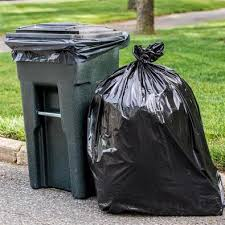

About Waste Management
TrashWell is an innovative web application that streamlines waste management processes for households, waste collection services, and administrators. Proper waste management is crucial for maintaining a clean and sustainable environment.
The objective of this project is to develop a smart waste management system that enhances waste collection efficiency, promotes recycling efforts, and provides insights into environmental impact metrics.
The purpose of TrashWell is to facilitate efficient waste collection, encourage recycling, and offer valuable environmental insights to users.
Our Management System
Collection Schedule
Manage your waste collection schedule efficiently to ensure timely disposal of waste. Keeping track of your collection schedule helps in maintaining a clean and healthy living environment.
Recycling Tracker
Track your recycling efforts and see the positive impact you are making on the environment. Recycling helps reduce the amount of waste that ends up in landfills and conserves natural resources.